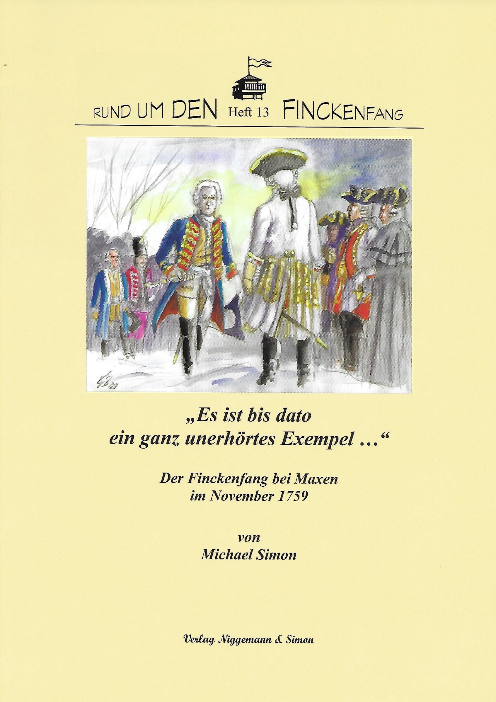

Rund um den Finckenfang · Heft 13
„Es ist bis dato ein ganz unerhörtes Exempel …“ Der Finckenfang bei Maxen im November 1759
Michael Simon · Herausgegeben vom Heimatverein Maxen e. V.
1. Auflage · Maxen 2009 · 52 Seiten · 49 Abbildungen · Bilderserie von Gerhard Bauer
ISBN 978-3-9810717-3-3
9,80 €
Zurzeit nicht lieferbar
Zum Inhalt
Die Darstellung des in Maxen ansässigen Volkskundlers Michael Simon gibt einen Überblick über die Hintergründe und den Verlauf des „Treffens bei Maxen am 20. und 21. November 1759“ und beschreibt, in welcher Weise es seither auf die Orts- und Heimatgeschichte nachgewirkt hat.